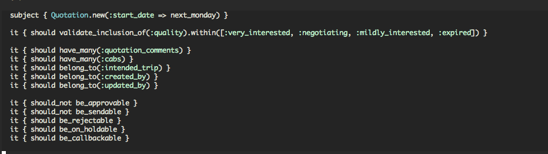
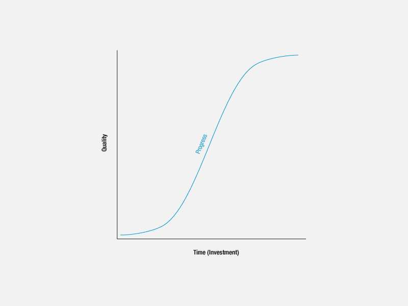

TDD 101
Stress free productivity
Who are we?
@_svs_
https://github.com/svs
rubyist since 2008
creator of dm-pg-types gem
Who are we?
@_svs_
co-founder of digiDoc (http://digidoc.co.in) and rBus (http://rBus.in)
co-founder of wrok.in
Currently CTO at embibe.com
Who are we?
@_anshulk
https://github.com/anshul
rubyist since 2007
co-founder of CubicTree ( tech solutions for the law sector)
co-founder of wrok.in
Currently VP Data and Engg at embibe.com
WHAT DO WE WANT AS DEVELOPERS?
We "write" and "deploy" software. Both of these must be fun.
We don't want to do "boring stuff"
We want time to play with cool new stuff
BUT INSTEAD!
Manual deployments (error prone, boring)
Stressful failed deployments
Regressions (didn't I just fix this bug?)
Undocumented code
Complex code
Undefined behaviour
IF ONLY....
..there were some way
that we could automatically verify the correctness of our programs?
Use computers to do work
Use humans to drink beer with
- Zach Holman
RSpec
RSpec let's you write executable specifications for your Ruby programs

What is TDD?
Making testing a first class concern while developing.
Why?
-
The same things that make your code easy to test, make it easy to change!
-
Guarantee behaviour.
-
Refactor LIKE A BOSS!
-
Deploy LIKE A BOSS!
BUT....
it's time consuming
it's expensive
it's BORING!
That's ok. It's called the learning curve!
